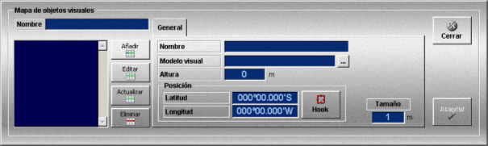

Objetos
Los mapas de objetos visuales están formados por una colección de objetos para cada uno de los cuales se define un modelo, una altura, un tamaño y una posición.
La creación y edición de estos mapas se realiza mediante la siguiente ventana.

Esta ventana incluye los datos y botones que se describen a continuación:
Nombre: Nombre del mapa.
Formato: caracteres alfanuméricos.
Botones de manejo de la lista de objetos:
Añadir: Al pulsar este botón, se añade un objeto a la lista con los datos introducidos en la solapa General. El icono del objeto visual se muestra en la presentación cartográfica.
Editar: Al pulsar este botón se pueden seleccionar los objetos picando sobre ellos con el botón izquierdo del ratón en el área de Presentación Cartográfica, y cambiarlos de posición arrastrando el ratón hasta la nueva posición. Asimismo, se pueden seleccionar los objetos sobre la lista para consultar o modificar sus datos, en este caso, el botón Editar se pulsa automáticamente y el icono gráfico se marca. La modificación de los datos requiere confirmación mediante el botón Actualizar.
Nota: Durante la edición de objetos gráficos (zonas meteorológicas, balizas, mapas de viento y corriente, rutas, objetos visuales…) se anulan las funciones asignadas a los botones del ratón para control de la presentación cartográfica (posicionar hook, zoom+, zoom- demora/distancia…), por tanto para ver los objetos hay que hacer zoom sobre la zona de la carta en la que se encuentran dichos objetos antes de pulsar el botón Editar.
Actualizar: Al pulsar este botón se actualizan los datos del objeto seleccionado, con los nuevos datos introducidos.
Eliminar: Al pulsar este botón se elimina de la lista el objeto seleccionado. También se pueden eliminar objetos picando sobre ellos con el botón izquierdo del ratón en el área de presentación cartográfica y pulsando la tecla "Suprimir".
Datos para la definición de cada objeto (solapa General)
Nombre: Nombre del objeto.
Formato: caracteres alfanuméricos.
Modelo visual: Fichero con formato "flt" que contiene el modelo tridimensional del objeto.
El nombre del fichero se puede incluir a mano o insertarlo directamente desde una carpeta pulsando el botón .
Nota: Si el simulador tiene sistema visual, para visualizar correctamente el objeto, el fichero flt debe estar incluido en la carpeta correspondiente del PC del visual.
Altura: Altura a la que se sitúa el objeto.
Unidades: metros
Rango: 0.0 – 1000000.0
Latitud: Latitud a la que se sitúa el objeto.
Unidades: grados y minutos con formato ggºmm.mmm’N/S
Rango: 00º00.000’N a 89º59.999’N y 00º00.000’S a 89º59.999’S
Longitud: Longitud a la que se sitúa el objeto.
Unidades: grados y minutos con formato gggºmm.mmm’E/W
Rango: 000º00.000’E a 179º59.999’E y 00º00.000’W a 179º59.999’W
Hook: Al pulsar este botón los campos Latitud y Longitud se rellenan automáticamente con la posición del Hook.
Tamaño: Factor de escala que se aplica al tamaño original del modelo visual.
Unidades: adimensional
Rango: 1 – 100
Los mapas de objetos visuales, una vez preparados, podrán ser añadidos a los Escenarios, los cuales a su vez pueden ser incorporados en distintos Ejercicios.
Los objetos visuales se muestran gráficamente en la Presentación Cartográfica del instructor, tanto durante la preparación como durante la ejecución de ejercicios que incluyan mapas de objetos visuales. Asimismo también aparecen en el sistema visual.